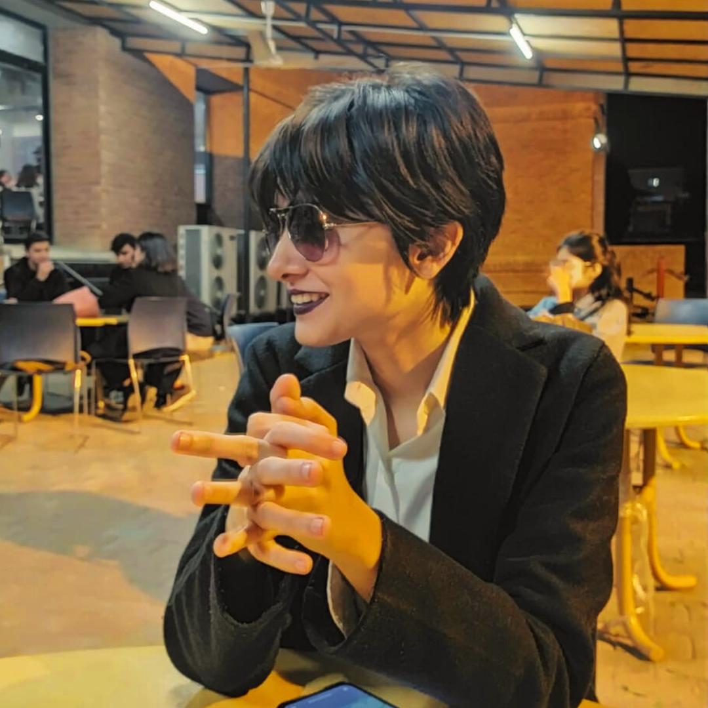

frog enthusiast, scientist, PhD student (in that order)
rumaisa {at} cs {dot} stanford {dot} edu | cv
I am a second-year CS PhD student at Stanford University advised by Zakir Durumeric and funded by the Stanford Graduate Fellowship. Before joining Stanford, I was at LUMS (BS ‘23). My research focuses broadly on understanding the web and building systems to enable us to answer complex questions about it. I am also interested in how access to the Internet differs across the world.
At LUMS, I worked under the supervision of Ihsan Ayyub Qazi, Zafar Ayyub Qazi and Zartash Afzal Uzmi on efficient means to debloat websites & software.
BLADE: Towards Scalable Source Code Debloating
Muaz Ali, Rumaisa Habib, Ashish Gehani, Sazzadur Rahaman, Zartash Afzal Uzmi
IEEE Secure Development Conference 2023
A Framework for Improving Web Affordability and Inclusiveness
Rumaisa Habib*, Sarah Tanveer*, Aimen Inam, Haseeb Ahmed, Ayesha Ali, Zartash Afzal Uzmi, Zafar Ayyub Qazi, Ihsan Ayyub Qazi [*Joint first authors]
ACM SIGCOMM 2023
A First Look at Public Service Websites from the Affordability Lens
Rumaisa Habib, Aimen Inam, Ayesha Ali, Ihsan Ayyub Qazi, Zafar Ayyub Qazi
The Web Conference 2023